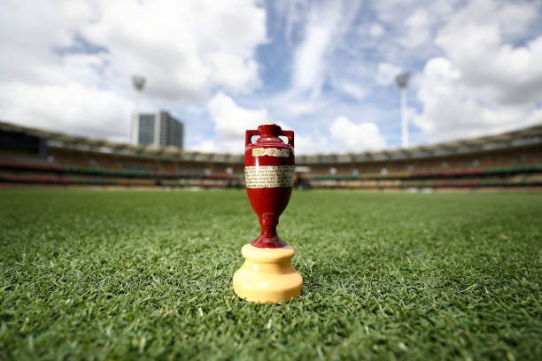

The Ashes are a test series between Australia and England about every 2 years.
It started in 1882, after Australia's first test victory in England. The Sporting Times mocked England and said that "The body will be cremated and the ashes taken to Australia".
The Ashes 2025-6 in Australia resulted in Australia winning 4 matches and England winning the 4th.
